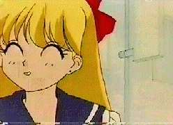
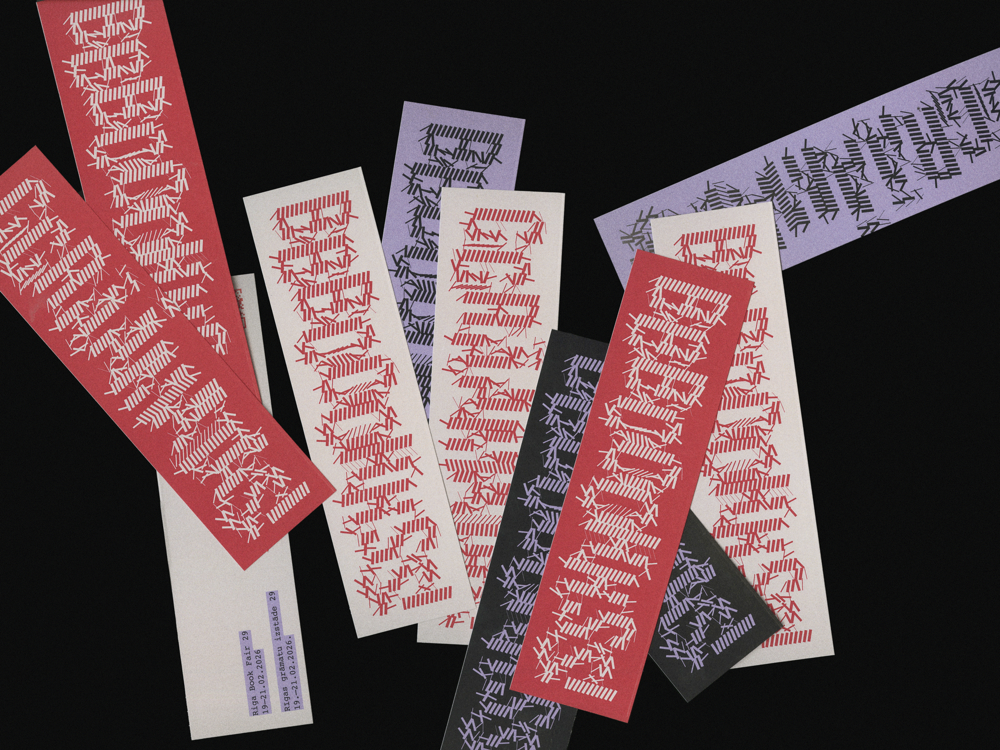
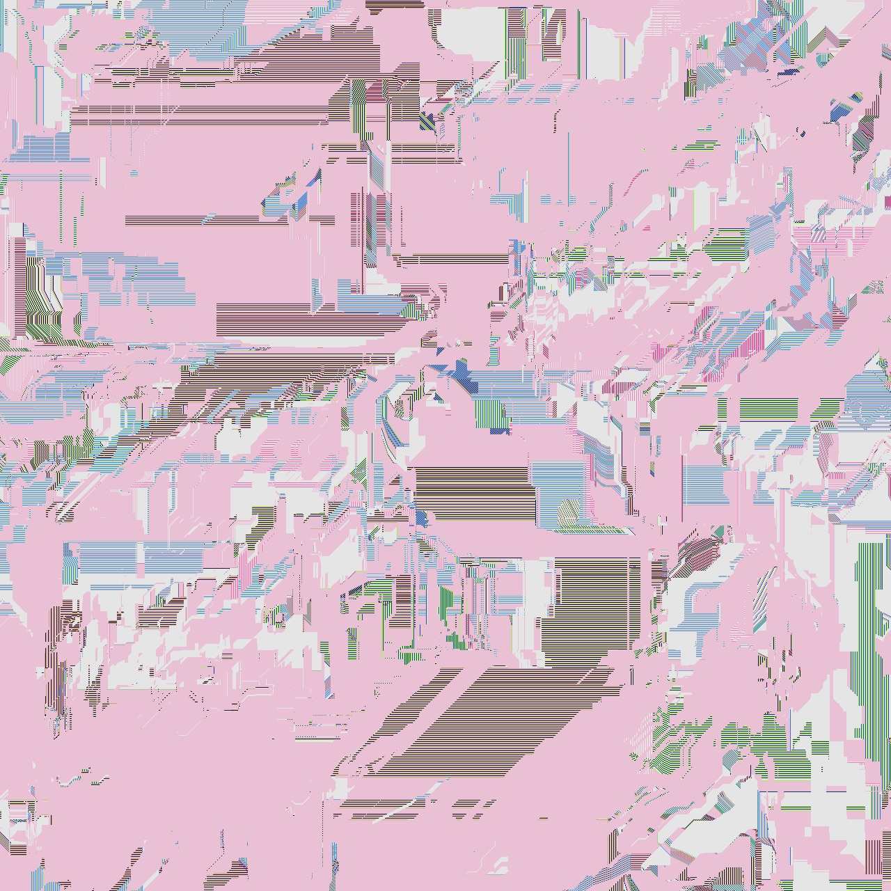
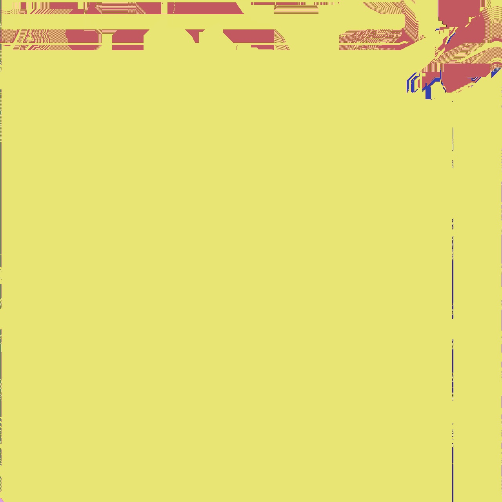
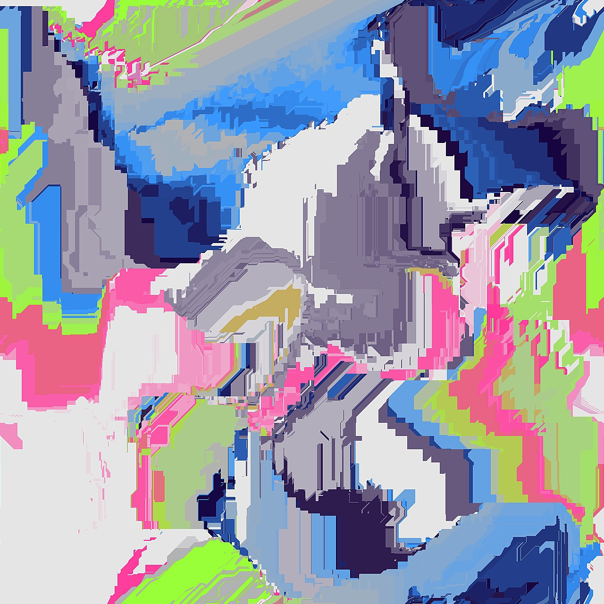

Michael O'Regan (/ˈmaɪ.kəl oʊˈɹiː.gən/ [speak]) is a graphic designer from Toronto, Canada, currently pursuing a Bachelor of Design at York University. He welcomes you graciously into his web portfolio; it smells like fresh milk, eggs, fish, shellfish, tree nuts, peanuts, wheat, soybeans, and sesame.

Riga Book Fair · 2026
Visual Identity, Event Design
A visual identity for Rīgas Grāmatu izstāde (Riga Book Fair), a reimagined version
of the existing Latvijas Grāmatu izstāde (Latvian Book Fair). The …project proposes a more
internationally oriented and design-focused version of the event, seeking to
position Latvia within a broader
global conversation about books, art, and culture.
The system includes a kinetic poster and custom
typography rendered in p5.js, a 16-page reversible festival
program, and additional brand applications including bookmarks.
Created for FA/DESN 3005 (Designing for Visual
Complexity),
York University. Educator Support: Zab Hobart.
[Read more]
No Opinions Only Sentiments · 2025
Editorial, Book Design
From the book blurb: "In the wake of tragedies like the massacres at Virginia Tech
and Simon’s Rock, public discourse
often retreats from syst…emic critique, favoring solemn,
apolitical
gestures of remembrance. Aiming to confront
this
avoidance, this book explores the personal, cultural, and political conditions
that foster such acts through a curated
collection of archival imagery and retellings of unconventional narratives. The
purpose of this book is to be a
conversation starter rather than a definitive answer. The reader is challenged
to sit with ambiguity and to grapple with
uncomfortable truths about individual and collective failures.""
5.25″ × 7.75″, 48 pp. Laser printed on various
substrates
including ruled notebook paper. Coptic bound with exposed
spine.
Created for FA/DESN 2001 (Communication Design
Process),
York University. Educator Support: David Cabianca.
[Read more]



Power of Pattern · 2023
Generative Design, Creative Coding
A series of tiles inspired by the past, present, and speculative
future of electronic music. The shared visual vocabulary of the tiles (glitchy,
…pixelated, geometric effects meant
to evoke printed circuit boards and video compression errors) emerges from
similarities in the underlying node structure.
The final triptych traces a loose narrative arc from
the
invention of early synthesis hardware, to the current dominance of music
streaming services and algorithm-driven curation, toward an optimistic vision of
the future where independent artists prevail over platform capitalism, leading
to an era of unprecedented technological and artistic innovation.
Created for FA/DESN 1002
(Understanding
Form
and Context), York University. Educator Support: Ronald Tau.
[Read more]